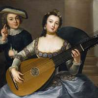
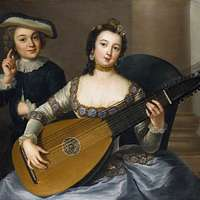

Oude tijd
 𝄞De verre voorganger van een snaarinstrument is de kithara
(gitara)(gitara),
𝄞De verre voorganger van een snaarinstrument is de kithara
(gitara)(gitara),
een instrument dat gebruikt
werd bij de oude Grieken. Hoe dat instrument in Spanje is geraakt is niet duidelijk.
Mogelijk is een luit uit Mesopotamië naar Spanje gekomen of is het gebaseerd
op de Romeinse citer,
waar men
dan een hals zou op hebben aangebracht.
Middeleeuwen
 𝄞 Een instrument dat familie is van de gitaar is de luit.
Een snaarinstrument dat vooral populair was in de late middeleeuwen,
renaissance en barok. In de middeleeuwen is er niet echt een voorganger van
de gitaar zoals we ze nu kennen. De oorsprong
van de luit ligt in Perzië en de Arabische landen
waar de benaming 'al ud' (het hout) is. Er wordt vermoed dat de al ud in Europa
is terecht gekomen door de kruistochten.
𝄞 De meeste luiten hebben dubbelkorige snaren (koren)net
zoals de eerste klassieke gitaren. De
chanterelle (hoogste snaar) is enkelkorig.
Een luit uit de middeleeuwen had eerst vier en later vijf koren en
het aantal koren vermeerderde doorheen de volgende stijlperiodes. De luit werd bespeeld
met een plectrum, meestal gemaakt van de pen van een veer.

𝄞 Een instrument dat familie is van de gitaar is de luit.
Een snaarinstrument dat vooral populair was in de late middeleeuwen,
renaissance en barok. In de middeleeuwen is er niet echt een voorganger van
de gitaar zoals we ze nu kennen. De oorsprong
van de luit ligt in Perzië en de Arabische landen
waar de benaming 'al ud' (het hout) is. Er wordt vermoed dat de al ud in Europa
is terecht gekomen door de kruistochten.
𝄞 De meeste luiten hebben dubbelkorige snaren (koren)net
zoals de eerste klassieke gitaren. De
chanterelle (hoogste snaar) is enkelkorig.
Een luit uit de middeleeuwen had eerst vier en later vijf koren en
het aantal koren vermeerderde doorheen de volgende stijlperiodes. De luit werd bespeeld
met een plectrum, meestal gemaakt van de pen van een veer.
